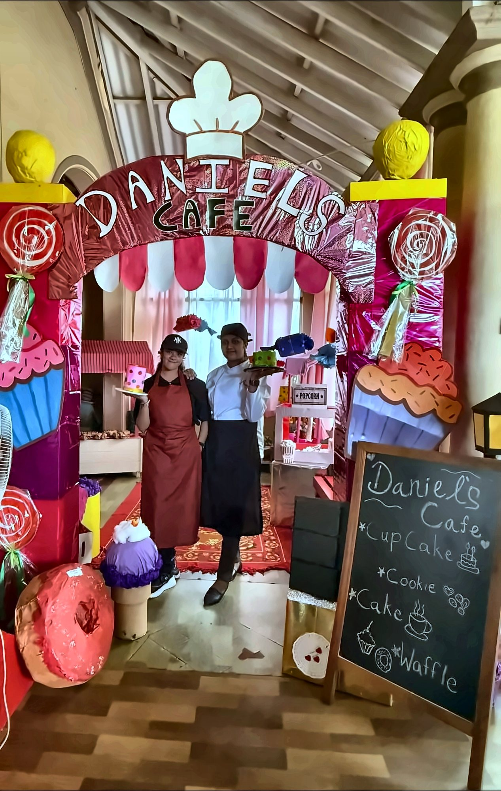

Celebrations that become lifelong memories
From our annual Art & Craft Exhibition to birthdays, Career Day and Vesak, every event is designed to help children learn, express themselves and feel part of a community.

Art & Craft Exhibition 2026
Our biggest event of the year: "Where Dreams Come to Reality". Students, teachers and parents transformed the school into seven amazing worlds: the Café, Jungle, Farm, Arctic Region, World of Transportation, Space and the Deep Sea. Everything was handmade, and everyone was welcome.


First Day at Preschool
Starting school is a big step for children and parents. We make it a celebration, with a circus-tent photo booth, a "First Day of Preschool" sign and lots of reassurance, so the first memory of school is a happy one.


Birthday celebrations
Every child's birthday is celebrated with their friends: a cake, a birthday song and a special personalised card. A small moment that makes each child feel truly special.

Halloween & dress-up days
Superheroes, princesses, pumpkins and face paint. Dress-up days build imagination, confidence and plenty of laughter.


Career Day
Our little police officers, firefighters, builders, pilots and doctors learn about the people who help our community, and dream about who they will become.

Cultural & national celebrations
Sri Lanka's rich mix of cultures is part of everyday learning. Children dress in traditional clothes, greet with "Ayubowan" and "Vanakkam", make Vesak lanterns, play Avurudu games, and celebrate Deepavali, Christmas, Ramazan and Hajj together.


Activity days
Hands-on days that build real-life skills: washing a T-shirt with baby soap on Laundry Day, cleaning and dusting our furniture and toys, and "Bring Life to a Story", where our teachers become storybook characters.


Teachers' Day & staff awards
Our teachers are the heart of Daniels. We celebrate them on Teachers' Day and honour a Best Staff Member every term for dedication, commitment and kindness.


Be part of the next celebration
Come and visit, and see what makes the Daniels community so special.